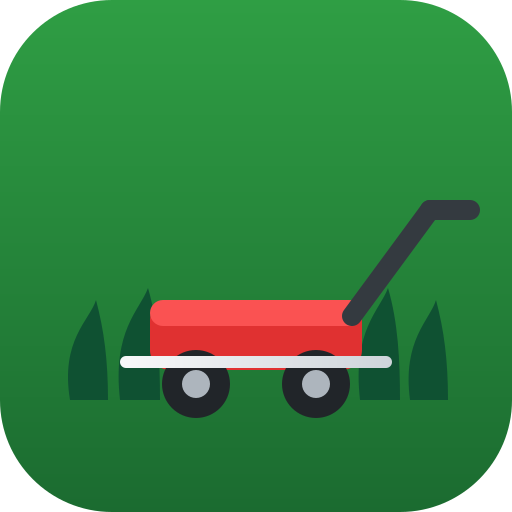

Lawnwave
Best day to cut · Summerville, SC
Recommendation
Checking the forecast…
Next 7 Days
Your Lawns
Daily Alerts
Backup
Save your cut logs to a file (e.g. in Google Drive), or restore them on a new device.
⬇ Export
⬆ Import